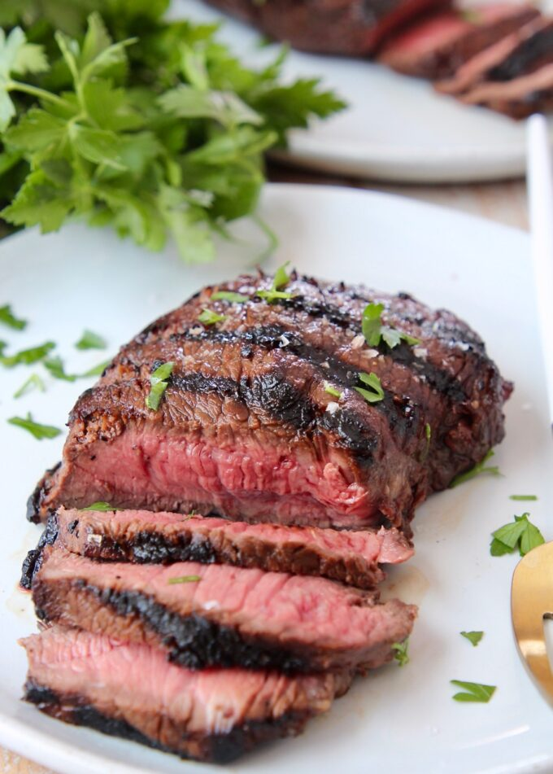

Steak Marinade

This steak marinade is a family recipe that has been developed only over
the last 5 years.
Marinating a steak before cooking serves two purposes: It helps tenderize
the meat and adds just the right amount of flavor.
Steak Marinade Ingredients:
-
Oil: This top-rated steak marinade recipe starts with olive oil, which
keeps the meat nice and moist.
-
Sauces: You'll need Worcestershire sauce and soy sauce. Hot sauce is
optional, but it's a great addition for people who appreciate a little
heat.
-
Lemon juice: The acidity from the lemon juice cuts through the other
flavors, adding welcome brightness. The acid also helps tenderize the
meat even further.
-
Spices and seasonings: This flavorful marinade is seasoned with dried
basil, garlic powder, dried parsley flakes, white pepper, and minced
garlic.
Ingredients:
- ½ cup olive oil
- ⅓ cup soy sauce
- ⅓ cup fresh lemon juice
- ¼ cup Worcestershire sauce
- 3 tablespoons dried basil
- 1 ½ tablespoons garlic powder
- 1 ½ tablespoons dried parsley flakes
- 1 teaspoon ground white pepper
- 1 teaspoon dried minced garlic (Optional)
- ¼ teaspoon hot pepper sauce (Optional)
Steps:
-
Place olive oil, soy sauce, lemon juice, Worcestershire sauce, basil,
garlic powder, parsley, white pepper, minced garlic, and hot pepper
sauce in a blender; blend on high speed until thoroughly combined, about
30 seconds.
Return to main page